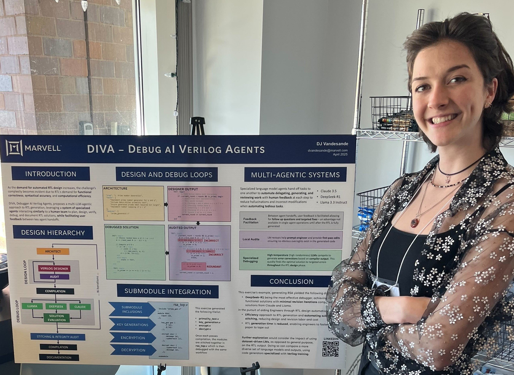

Debugging My Internship: When Intentionality Meets Innovation
2025 Brooke Owens Fellowship Application
THE STORY
Watercolour, 2023
It's no secret that interns don't always get the most exciting work.
At the beginning of my internship at Marvell, I found myself in exactly that position—assigned tasks that weren't challenging me. I knew this was a large company with interesting projects happening beyond my desk, and I knew that if I didn't assert myself by showing my managers what I could do, they would keep me in the same box.
Acrylic, 2023
So I made a choice: I would actively seek out the work I wanted to do.
I talked with my manager about taking on additional research alongside my assigned work, proposing that I explore AI applications in hardware design. Though initially wary about my juggling both responsibilities, my manager agreed. I began connecting with brilliant researchers working on AI for hardware, and discovered they were searching for reliable code generation tools for the notoriously difficult syntax of Verilog.
Graphite, 2023
I had found my project and my target became clear.
I wanted to create an AI code-generating tool using AWS to solve Marvell's ongoing problem of unreliable language models for hardware code.
This required careful time management. I documented my progress meticulously so I could quickly switch between my design work and AI research without losing my train of thought. I scheduled meetings to align with extremely busy senior engineers for feedback on both projects. I engineered prompts, compared language models, and iterated relentlessly.
Gouache, 2025
Then came the hard part. Trial and Error, and Error, and Error
Iteration after iteration failed basic syntax tests. I tried training a private model on the company's codebase. I tested the newest models highest on code-generating leaderboards. Nothing worked! No matter how carefully I designed the single-agent system, it couldn't produce syntactically correct, compilable code without serious intervention. At that point, manual coding was faster. I considered giving up.
Mixed Medium, 2024
And finally, a breakthrough happened!
Then, in December 2024, a new paper introduced me to multi-agentic AI systems—interacting language models that could self-correct with human oversight but little intervention.
After experimenting with different agent workflows and prompts, I completed DIVA (Debugging AI Verilog Agents), my first research project! I presented it at an internal conference in Boston to senior engineers and connections I'd made in American offices whom I had yet to meet in person. While Marvell didn't adopt DIVA company-wide, I helped bring multi-agentic coding to the table—and it successfully generated RSA encryption code from written coding standards, something previous systems the company was considering couldn't do.
Outcome & Thanks

The lasting connections I made became an inspiring group of engineers to discuss AI developments with, even as an intern. More importantly, I learned about my resilience in research. This project pushed me beyond anything I'd designed in university—there was no clear roadmap, no team, no deadlines except the conference date. I had to be entirely self-motivated.
My manager, initially wary, was extremely impressed with the result.
This experience fundamentally changed how I approach challenges. I now look more creatively at what I can do with my coding skills and passion for AI. Since then, I've pursued numerous projects involving image and text generation, all built from open-source documentation and frequent discussions with friends as enthralled with AI as I am. I learned that when I'm not being challenged, I don't wait for opportunity to find me—I seek it out, communicate what I want, and create it myself.